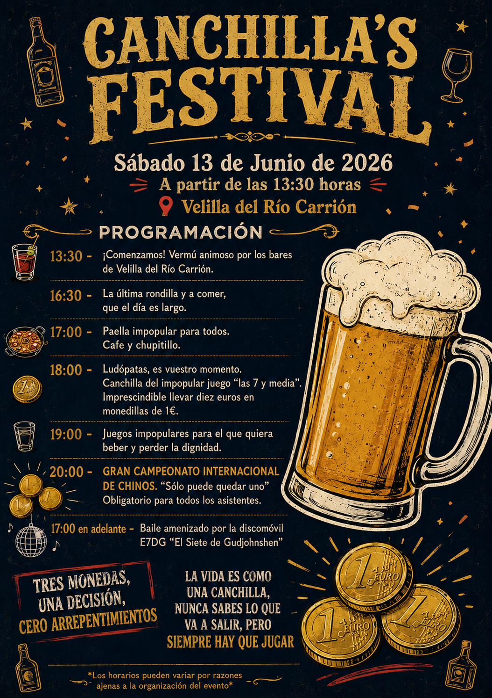

Aquí está el programa y un poquito de historia sobre nuestro pueblo.

"Prepara tu vaso, la fiesta está a punto de comenzar."
Explora el mapa interactivo de Velilla del Río Carrión para encontrar el festival:
Cuentan las crónicas medievales que en las tierras sagradas a los pies del Espiguete no había torneo de espadas ni justas de caballos que valieran. El verdadero prestigio, la disciplina que separaba a los meros hombres de los mitos vivientes, era el **Solemne Juego de los Chinos**.
Deporte de Reyes, los Chinos no es un simple juego, es la disciplina más prestigiosa del mundo. Requiere psicología, nervios de acero y un hígado capaz de procesar el néctar de los dioses mientras se cuentan monedas ocultas.
Generaciones enteras de sabios fracasaron intentando dominar la mesa de juego en la mítica Canchilla, pero la historia cambió para siempre el día en que un guerrero local alzó el puño. Con una velocidad de manos sobrenatural y una capacidad psicológica divina para adivinar el metal oculto, **Víctor completó la mayor hazaña jamás vista**. Ante tal despliegue de genialidad, la corte entera y los ancianos del lugar inclinaron la cabeza y lo coronaron de forma oficial como el indiscutible y eterno Príncipe y Señor de los Chinos.
El LegadoLas reglas oficiales del deporte rey en la Canchilla:
"La vida es como una canchilla, nunca sabes lo que va a salir, pero siempre hay que jugar"